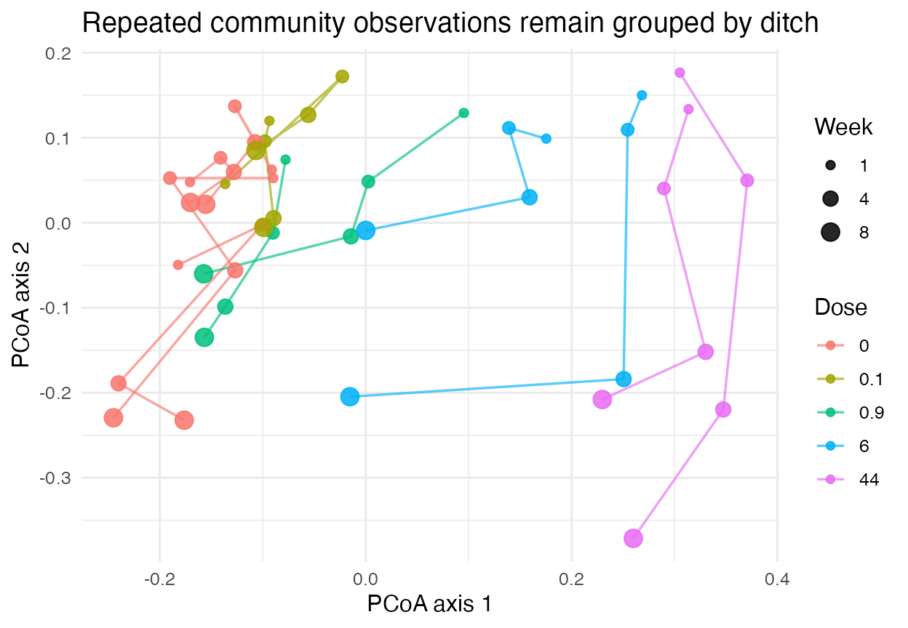
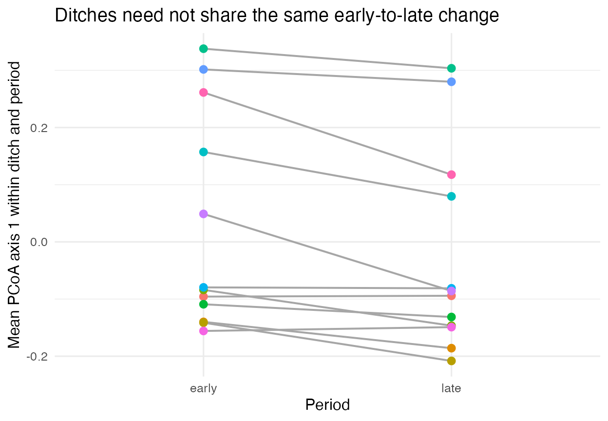

random-effects.RmdRandom effects describe where independent ecological replication
lives. A formula such as (1 | site) says that observations
from the same site share a site-level community component; it does not
turn repeated quadrats or dates into independent treatment replicates.
Nested, blocked, and random-slope terms extend that idea to more
structured sampling.
distmer deliberately borrows lmer formula
notation because it is a concise way to state this hierarchy. It is not
a likelihood or REML wrapper around lme4. It applies the
declared fixed and random subspaces to a Gower-centred dissimilarity
matrix and obtains inference from design-appropriate denominators and
restricted permutations.
The vegan::pyrifos data contain aquatic-invertebrate
communities from 12 ditches sampled repeatedly before and after
insecticide application. Dose was assigned to ditches, so ditch is the
experimental unit. We use four balanced post-treatment dates per
ditch.
data(pyrifos, package = "vegan")
ditch <- gl(12, 1, length = nrow(pyrifos))
week <- rep(c(-4, -1, 0.1, 1, 2, 4, 8, 12, 15, 19, 24), each = 12)
dose_by_ditch <- c(0.1, 0, 0, 0.9, 0, 44, 6, 0.1, 44, 0.9, 0, 6)
dose <- factor(rep(dose_by_ditch, 11))
keep <- week %in% c(1, 2, 4, 8)
community <- pyrifos[keep, ]
pyrifos_env <- data.frame(
ditch = droplevels(ditch[keep]),
dose = droplevels(dose[keep]),
week = week[keep]
)
pyrifos_bray <- vegdist(community, method = "bray")
with(pyrifos_env, table(ditch, dose))
#> dose
#> ditch 0 0.1 0.9 6 44
#> 1 0 4 0 0 0
#> 2 4 0 0 0 0
#> 3 4 0 0 0 0
#> 4 0 0 4 0 0
#> 5 4 0 0 0 0
#> 6 0 0 0 0 4
#> 7 0 0 0 4 0
#> 8 0 4 0 0 0
#> 9 0 0 0 0 4
#> 10 0 0 4 0 0
#> 11 4 0 0 0 0
#> 12 0 0 0 4 0
ditch_ord <- cmdscale(pyrifos_bray, k = 2)
ditch_ord <- cbind(
pyrifos_env,
data.frame(Axis1 = ditch_ord[, 1], Axis2 = ditch_ord[, 2])
)
ggplot(ditch_ord, aes(Axis1, Axis2, group = ditch, colour = dose)) +
geom_path(aes(order = week), alpha = 0.65, linewidth = 0.6) +
geom_point(aes(size = week), alpha = 0.85) +
scale_size_continuous(range = c(1.8, 4), breaks = c(1, 4, 8)) +
labs(title = "Repeated community observations remain grouped by ditch",
x = "PCoA axis 1", y = "PCoA axis 2", colour = "Dose",
size = "Week")
#> Warning in geom_path(aes(order = week), alpha = 0.65, linewidth = 0.6):
#> Ignoring unknown aesthetics: order
The model is written in the same compact way as a random-intercept mixed model:
ditch_fit <- permanova(
pyrifos_bray ~ dose + (1 | ditch),
pyrifos_env, permutations = 999, seed = 26
)
ditch_fit$table
#> Source df SS MS Pseudo-F P(perm) P(MC)
#> 1 dose 4 1.8946032 0.47365081 3.467617 0.002 0.0035
#> 2 ditch within fixed model 7 0.9561482 0.13659260 NA NA NA
#> 3 Within ditch 36 2.2378478 0.06216244 NA NA NA
#> 4 Total 47 5.0885992 NA NA NA NA
#> Unique perms
#> 1 999
#> 2 NA
#> 3 NA
#> 4 NA
summary(ditch_fit)
#> Distance-based PERMANOVA
#> Engine: balanced random intercept (Type I SS)
#>
#> Factors
#> Name Type Levels
#> dose Fixed 5
#> ditch Random, main 12
#>
#> PERMANOVA table of results
#> Source df SS MS Pseudo-F P(perm) P(MC) Unique perms
#> dose 4 1.895 0.474 3.4676 0.0020 0.0035 999
#> ditch within fixed model 7 0.956 0.137
#> Within ditch 36 2.238 0.062
#> Total 47 5.089
#>
#> Denominators
#> Source Denominator
#> dose MS[ditch within fixed model]Because every ditch contributes four dates, the dose numerator is compared with the exact between-ditch residual stratum. Residual community configurations move as intact ditches. The result therefore represents a comparison among equally weighted ditch communities, not among 48 independent dates.
The random term also determines the denominator. Consequently,
type = "II" or "III" is not a substitute for
specifying the sampling structure: when the random design supplies an
exact stratum, type is not applicable.
A random intercept allows ditches to have different average communities. A random slope additionally allows their within-ditch changes to differ. For a balanced two-condition comparison, define an early and late period with two observations in each ditch-period cell.
period_env <- transform(
pyrifos_env,
period = factor(
ifelse(week %in% c(1, 2), "early", "late"),
levels = c("early", "late")
)
)
with(period_env, table(ditch, period))
#> period
#> ditch early late
#> 1 2 2
#> 2 2 2
#> 3 2 2
#> 4 2 2
#> 5 2 2
#> 6 2 2
#> 7 2 2
#> 8 2 2
#> 9 2 2
#> 10 2 2
#> 11 2 2
#> 12 2 2
period_ord <- transform(ditch_ord, period = period_env$period)
period_centres <- aggregate(
cbind(Axis1, Axis2) ~ ditch + period,
data = period_ord, FUN = mean
)
ggplot(period_centres, aes(period, Axis1, group = ditch)) +
geom_line(colour = "grey65", linewidth = 0.7) +
geom_point(aes(colour = ditch), size = 2.4, show.legend = FALSE) +
labs(title = "Ditches need not share the same early-to-late change",
x = "Period", y = "Mean PCoA axis 1 within ditch and period")
period_fit <- permanova(
pyrifos_bray ~ period + (1 + period | ditch),
period_env, permutations = "all", seed = 26
)
period_fit$table
#> Source df SS MS Pseudo-F P(perm)
#> 1 period 1 0.4241459 0.42414594 6.790503 0.0004882812
#> 2 Between-subject random slope 11 0.6870780 0.06246164 NA NA
#> P(MC) Unique perms
#> 1 NA 4096
#> 2 NA NA
period_fit$fit$test[c(
"estimand", "exchangeable_units", "attainable_permutations",
"exchangeability_assumption"
)]
#> $estimand
#> [1] "equally weighted complete-subject condition-difference vectors"
#>
#> $exchangeable_units
#> [1] "ditch"
#>
#> $attainable_permutations
#> [1] 4096
#>
#> $exchangeability_assumption
#> [1] "central symmetry of subject difference vectors under the fixed-effect null"The fixed period term is the average complete-ditch
change. The denominator is the variation among ditch difference vectors.
Under the null, complete early-to-late difference vectors receive
independent sign flips; with 12 ditches there are
2^12 = 4096 assignments. Validity requires central symmetry
of those difference vectors. Because period was observed rather than
randomly assigned, this is a population-symmetry analysis of temporal
change, not a causal randomization test of time.
A numeric gradient can also vary by unit. With four post-treatment
weeks, (1 + week | ditch) estimates one within-ditch
community slope and tests the equally weighted average slope against the
variation among ditch slopes.
continuous_fit <- permanova(
pyrifos_bray ~ week + (1 + week | ditch),
pyrifos_env, permutations = 999, seed = 26
)
continuous_fit$table
#> Source df SS MS Pseudo-F P(perm) P(MC)
#> 1 week 1 0.01561438 0.015614383 6.842397 0.001 NA
#> 2 Between-group random slope 11 0.02510206 0.002282005 NA NA NA
#> 3 Residual 24 1.06725015 0.044468756 NA NA NA
#> Unique perms
#> 1 999
#> 2 NA
#> 3 NA
continuous_fit$fit$test[c(
"estimand", "permutation_algorithm", "exchangeability_assumption"
)]
#> $estimand
#> [1] "equally weighted within-group covariate slopes"
#>
#> $permutation_algorithm
#> [1] "whole-group sign flips of within-group slope vectors"
#>
#> $exchangeability_assumption
#> [1] "central symmetry of group slopes under the null"This linear slope is a concise worked example, not a claim that the Pyrifos trajectory is biologically linear. Plot the unit trajectories and consider nonlinearity before using a slope as the scientific summary.
(1 | site) — repeated observations within sites;
treatments assigned among sites are tested with sites as the independent
units.(1 | region/site) — sites nested within regions; each
predictor is tested at the hierarchy level where it varies.(1 | block) + (1 | treatment:block) — a treatment
randomized within blocks; the declared treatment-by-block variation
supplies the treatment denominator.(1 | region/site) + (1 | treatment:region) + (1 | treatment:region:site)
— treatment crossed with a nested region/site hierarchy.(1 + condition | subject) or
(1 + x | group) — correlated random intercepts and slopes
for complete repeated units.The standard vegan datasets are excellent community
examples, but they do not contain a fully documented randomized
region/site/block hierarchy. The nested and crossed formulas above are
therefore templates, not invented field metadata attached to
dune. Before fitting them, verify assignment, nesting,
replication, missing cells, and which lower-level observations must move
intact.
permanova() does with the formula
For readers who want the statistical machinery, the high-level call performs the following sequence:
G = -0.5 J D^2 J. The same centring applies to every
distance matrix; Euclidean distances give a positive semi-definite
G, while signed axes from non-Euclidean distances remain in
the analysis.If no validated method matches the declared design, the model stops. A formula that parses is not automatically a defensible permutation design.
Most users only need permanova(). The specialised
functions below are useful for inspecting, validating, or extending a
particular design. This table is a reference rather than a menu that
must be learned before fitting a model.
| Formula pattern | Specialised implementation | Denominator or permutation |
|---|---|---|
| d ~ a | permanova_unbalanced(); permanova_oneway() is the direct one-factor reference | Within-group residual; unrestricted observations |
| d ~ a + b (unbalanced, type = ) | permanova_unbalanced() | Full-model residual; term-specific Freedman-Lane |
| d ~ a + (1 | site) | permanova_mixed() | Exact whole-plot EMS |
| d ~ a + x + (1 | site) | permanova_mixed_covariate() | Split-plot or randomized-block covariate strata |
| d ~ a + (1 | region/site) | permanova_nested() | Level-specific EMS; descendants move intact |
| d ~ a + x + (1 | region/site) | permanova_nested_covariate() | Covariate-adjusted nested strata |
| d ~ a + (1 | block) + (1 | a:block) | permanova_crossed() | Exact a:block EMS; intact cells within block |
| d ~ a + (1 | region/site) + (1 | a:region) + … | permanova_hybrid() | Exact a:region EMS; intact treatment profiles |
| d ~ x + (1 + x | group) | permanova_random_slope_continuous() | Between-group slope; whole-group sign flips |
| unbalanced random / nested / block | permanova_unequal_random_intercept() / permanova_unbalanced_*() | Unit-centroid inference; size- or topology-restricted permutations |
permanova_capabilities() returns the complete
machine-readable support table, including estimands, error-control
claims, and explicit exclusions.
Name the experimental unit, state where treatment was assigned, reproduce the formula, identify the dissimilarity and transformation, describe the denominator or unit-centroid estimand, state exactly what was permuted or sign-flipped, and record the permutation count and seed. For random slopes, also state the central-symmetry assumption and show the unit-level changes.